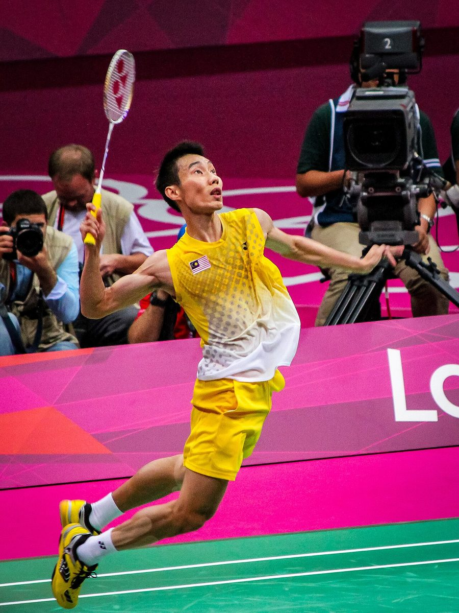

林丹：“超级丹”如何包揽羽毛球所有重大冠军
他在首届奥运会首轮出局，之后在北京和伦敦两夺金牌，五获世锦赛冠军，并集齐羽毛球全部九项重大赛事冠军。

从福建到国家队
林丹1983年10月14日出生于福建省龙岩市。他五岁开始练习羽毛球，12岁赢得全国青少年锦标赛冠军后，被选入八一体工队。据美国NBC体育和《南华早报》报道，他于2000年进入国家队，此后为国家队效力20年。
他的突破出现在2004年全英公开赛。决赛中，他以9比15、15比5、15比8击败丹麦名将盖德，首次夺得全英赛冠军。赛后盖德称他为“超级丹”，这个绰号伴随了他此后的整个职业生涯。

首届奥运会的挫折
林丹以男单头号种子身份参加2004年雅典奥运会，却在首场比赛中输给新加坡选手苏西洛。这是他四次参加奥运会中的第一次。
两枚奥运金牌
2008年北京奥运会上，林丹在主场观众面前以21比12、21比8击败马来西亚选手李宗伟，赢得金牌。2012年伦敦奥运会决赛，两人再次相遇。林丹先以15比21输掉首局，随后以21比10、21比19逆转获胜，成为首位卫冕奥运会男单冠军的选手。

林丹五次赢得世锦赛冠军，分别在2006年、2007年、2009年、2011年和2013年，另外还在2005年和2017年获得银牌。他六次夺得全英公开赛冠军，最后一次是在2016年。28岁时，他已完成“超级全满贯”，集齐了他那个时代的全部九项重大赛事冠军，包括奥运会、世锦赛、世界杯、汤姆斯杯、苏迪曼杯、亚运会和亚锦赛。
他还帮助中国队在2004年至2018年间六次赢得汤姆斯杯，在2005年至2015年间五次赢得苏迪曼杯。
与李宗伟的对决
十多年间，林丹与李宗伟多次在决赛中相遇。《南华早报》称，他们的对抗被普遍认为是羽毛球史上最伟大的对决。2016年里约奥运会半决赛，李宗伟以15比21、21比11、22比20战胜林丹。林丹随后在铜牌战中输给丹麦选手安赛龙，获得第四名。
他在世界巡回赛上的最后一个冠军是2019年马来西亚公开赛，决赛中他击败了队友谌龙。
退役与名人堂
2020年7月4日，36岁的林丹在微博上宣布退役。据NBC体育报道，他写道，“伤病和疼痛已不允许我再和队友们并肩作战”。《南华早报》报道称，他也希望有更多时间陪伴家人。当时他的世界排名已在20名开外，第五次参加奥运会已无可能。
2023年5月，世界羽联将林丹和李宗伟选入名人堂。据世界羽联介绍，这对昔日对手于2023年5月26日在马来西亚吉隆坡会议中心的仪式上一同入选。